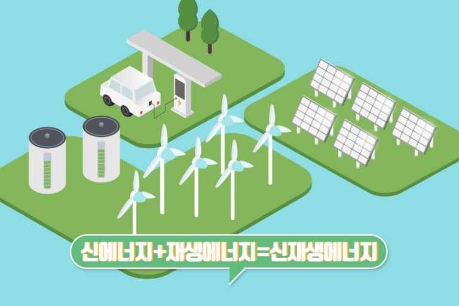

환경에너지공학

환경 에너지 공학은 환경 보호와 지속 가능한 에너지 생산 및 이용을 위한 공학 분야이다. 환경 문제와 에너지 공급의 문제를 동시에 해결하기 위해 다양한 기술과 전략을 개발하고 적용한다.
분야
- 재생 에너지: 재생 가능한 에너지원인 태양 에너지, 풍력, 수력, 지열, 바이오매스 등을 활용하여 전력을 생산하는 기술을 연구합니다. 이러한 기술은 화석 연료에 의존하는 전력 생산 방식에 비해 탄소 배출량을 크게 줄일 수 있습니다
- 에너지 효율: 에너지를 보다 효율적으로 사용하기 위한 기술과 방법을 연구합니다. 건물, 산업, 교통 등에서 에너지 소비를 최적화하여 에너지 절약과 친환경적인 운영을 실현합니다.
- 환경 보호: 환경 오염을 최소화하기 위한 기술과 정책을 개발합니다. 대기 오염, 수질 오염, 폐기물 처리 등에 대한 문제를 해결하고, 환경에 미치는 영향을 최소화하며 지속 가능한 발전을 추구합니다.
- 친환경 교통: 화석 연료에 의존하지 않고 친환경적인 교통 시스템을 개발합니다. 전기 자동차, 수소 연료 전지 등의 기술을 연구하여 대기 오염과 의존도 높은 에너지 수입의 문제를 해결합니다.
- 지속 가능한 도시 계획: 도시 환경을 개선하고 지속 가능한 도시 개발을 위한 기술과 전략을 연구합니다. 친환경 건축, 도시 녹지, 교통 체계 개선 등을 통해 도시의 에너지 효율성과 삶의 질을 향상시킵니다.
환경 에너지 공학은 환경 문제와 에너지 공급의 해결을 위해 다양한 분야에서 연구와 혁신을 추구하는 중요한 학문 분야입니다. 이 분야의 전문가들은 새로운 기술과 솔루션을 개발하여 지구 환경과 인류의 미래를 위한 지속 가능한 발전을 돕고 있습니다.